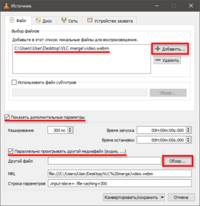

Откройте медиапроигрыватель VLC, выберите команду меню "Медиа > Конвертировать/сохранить…".
В появившемся окне "Источник" нажмите кнопку "Добавить…" и выберите на компьютере видеодорожку (в нашем случае WebM файл). Включите опцию "Показать дополнительные параметры" внизу окна "Источник", а затем опцию "Параллельно проигрывать другой медиафайл (аудио, …)" и в поле "Другой файл" укажите звуковую дорожку (в нашем случае MP3-файл), воспользовавшись кнопкой "Обзор…".

Появится еще одно окно "Источник", в котором необходимо нажать кнопку "Добавить…", выбрать аудиофайл на компьютере и нажать кнопку "Выбрать".
В итоге в первом окне "Источник" будут указаны пути к обоим файлам видео и аудио. Нажмите кнопку "Конвертировать/сохранить".
Откроется окно "Преобразовать". В выпадающем списке "Профиль" выберите подходящий для Вашей задачи набор параметров кодека, который будет задействован для конвертирования видео. Вы также можете создать собственный профиль или изменить настойки существующего.
В случае если конечный файл необходимо сохранить в формате MP4, учтите, чтобы звук корректно воспроизводился при проигрывании такого видео в стандартных плеерах Windows и Android, необходимо активировать поддержку аудиокодека Advanced Audio Codec (AAC) в конвертере VLC.
В поле "Конечный файл" укажите имя и расположение будущего файла с объединенными видео и аудио.
Нажмите кнопку "Начать" для запуска процесса конвертирования. Ползунок воспроизведения будет отображать прогресс конвертирования.
По окончании работы конвертера закройте медиапроигрыватель VLC, откройте папку с сохраненным видео и проверьте результат слияния в целевом плеере.
Особенности слияния видео и аудио в VLC
Если звуковой трек короче видеодорожки, результирующее видео будет урезано до длительности аудио.
Если видео по длительности короче аудио, то результирующее видео будет равно длине исходной видеодорожки.
Если видео уже имеет звуковую дорожку, то интегрируемый аудиотрек будет добавлен в конечный видеофайл как вторая звуковая дорожка, и чтобы ее услышать, нужно воспользоваться соответствующей опцией переключения аудиопотока в настройках медиапроигрывателя, в котором воспроизводится видео.
�